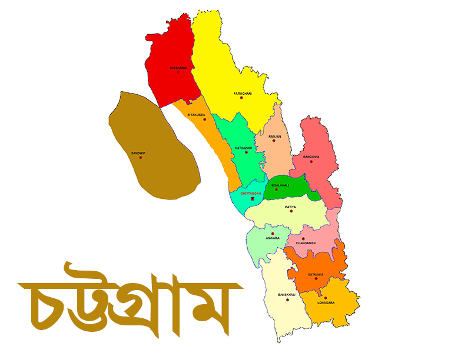
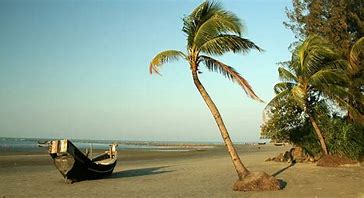
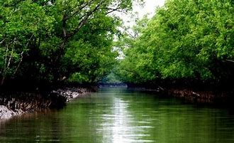

chittagong

ChittagongThe region of Chittagong is traditionally centred around its seaport which has existed since ancient
times. The region was home to the ancient independent Buddhist kingdoms of Samatata and Harikela.[1] It later fell under
of the rule of the Gupta Empire, the Pala Empire and the Arakanese kingdom of Waithali until the 7th century. Arab Muslims
traded with the port from as early as the 9th century. Historian Lama Taranath is of the view that the Buddhist king
Gopichandra had his capital at Chittagong in the 10th century. According to Tibetan tradition, this century marked the
birth of Tantric Buddhism in the region.[2] The region has been explored by numerous historic travellers, most notably
Ibn Battuta of Morocco who visited in the 14th century. During this time, the region was conquered and incorporated into
the independent Sonargaon Sultanate by Fakhruddin Mubarak Shah in 1340 AD.[3] Sultan Ghiyasuddin Azam Shah constructed a
highway from Chittagong to Chandpur and ordered the construction of many lavish mosques and tombs. After the defeat of
the Sultan of Bengal Ghiyasuddin Mahmud Shah in the hands of Sher Shah Suri in 1538, the Arakanese Kingdom of Mrauk U
managed to regain Chittagong. From this time onward, until its conquest by the Mughal Empire, the region was under the
control of the Portuguese and the Magh pirates (a notorious name for Arakanese) for 128 years.[2]
The Mughal commander Shaista Khan, his son Buzurg Umed Khan, and Farhad Khan, expelled the Arakanese from the area during the
Conquest of Chittagong in 1666 and established Mughal rule there. After the Arakanese expulsion, Islamabad, as the area came
to be known, made great strides in economic progress. This can mainly be attributed to an efficient system of land-grants to
selected diwans or faujdars to clear massive areas of hinterland and start cultivation. The Mughals, similar to the Afghans
who came earlier, also built mosques having a rich contribution to the architecture in the area. What is called Chittagong
today also began to have improved connections with the rest of Mughal Bengal. The city was occupied by Burmese troops shortly
in First Anglo-Burmese War in 1824 and the British increasingly grew active in the region and it fell under the British Empire.
The people of Chittagong made several attempts to gain independence from the British, notably on 18 November 1857 when the 2nd,
3rd, and 4th companies of the 34th Bengal Infantry Regiment stationed at Chittagong rose in rebellion and released all the
prisoners from jail but were suppressed by the Kuki scouts and the Sylhet Light Infantry (10th Gurkha Rifles).[2]
Read more
ChittagongThe region of Chittagong is traditionally centred around its seaport which has existed since ancient
times. The region was home to the ancient independent Buddhist kingdoms of Samatata and Harikela.[1] It later fell under
of the rule of the Gupta Empire, the Pala Empire and the Arakanese kingdom of Waithali until the 7th century. Arab Muslims
traded with the port from as early as the 9th century. Historian Lama Taranath is of the view that the Buddhist king
Gopichandra had his capital at Chittagong in the 10th century. According to Tibetan tradition, this century marked the
birth of Tantric Buddhism in the region.[2] The region has been explored by numerous historic travellers, most notably
Ibn Battuta of Morocco who visited in the 14th century. During this time, the region was conquered and incorporated into
the independent Sonargaon Sultanate by Fakhruddin Mubarak Shah in 1340 AD.[3] Sultan Ghiyasuddin Azam Shah constructed a
highway from Chittagong to Chandpur and ordered the construction of many lavish mosques and tombs. After the defeat of
the Sultan of Bengal Ghiyasuddin Mahmud Shah in the hands of Sher Shah Suri in 1538, the Arakanese Kingdom of Mrauk U
managed to regain Chittagong. From this time onward, until its conquest by the Mughal Empire, the region was under the
control of the Portuguese and the Magh pirates (a notorious name for Arakanese) for 128 years.[2]
The Mughal commander Shaista Khan, his son Buzurg Umed Khan, and Farhad Khan, expelled the Arakanese from the area during the
Conquest of Chittagong in 1666 and established Mughal rule there. After the Arakanese expulsion, Islamabad, as the area came
to be known, made great strides in economic progress. This can mainly be attributed to an efficient system of land-grants to
selected diwans or faujdars to clear massive areas of hinterland and start cultivation. The Mughals, similar to the Afghans
who came earlier, also built mosques having a rich contribution to the architecture in the area. What is called Chittagong
today also began to have improved connections with the rest of Mughal Bengal. The city was occupied by Burmese troops shortly
in First Anglo-Burmese War in 1824 and the British increasingly grew active in the region and it fell under the British Empire.
The people of Chittagong made several attempts to gain independence from the British, notably on 18 November 1857 when the 2nd,
3rd, and 4th companies of the 34th Bengal Infantry Regiment stationed at Chittagong rose in rebellion and released all the
prisoners from jail but were suppressed by the Kuki scouts and the Sylhet Light Infantry (10th Gurkha Rifles).[2]
Read more
Cox's Bazar

(/ˌkɒksɪz bəˈzɑː/; Bengali: কক্সবাজার, romanized: Kôksbajar; pronounced [kɔksbadʒaɾ])
is a city, fishing port, tourism centre, and district headquarters in south eastern near Chattogram Bangladesh. It is
located 150 km (93 mi) south of the city of Chittagong. Cox's Bazar is also known by the name Panowa, which translates
literally as "yellow flower". Another old name was "Palongkee".
The city covers an area of 23.4 km2 (9.0 sq mi) with 27 mahallas and 9 wards and as of 2011 had a population of 265,500.
[1] Cox's Bazar is connected by road and air with Chittagong.[2][3]
The modern Cox's Bazar derives its name from Captain Hiram Cox, an officer of the British East India Company, a Superintendent
of Palongkee outpost. To commemorate his role in refugee rehabilitation work, a market was established and named after him.It
is one of Bangladesh's main tourist spots. The city has the longest uninterrupted natural beach in the world.[4] Every Year
more than a million visitors arrive here from around the world
Read more
Sundarban

The Sundarban (Bengali: সুন্দরবন Shundorbôn) is the largest single block of tidal halophytic mangrove forest in the world.
The name Sundarban can be literally translated as “beautiful jungle” or “beautiful forest” in the Bengali language
(Sundar, “beautiful” and ban, “forest” or “jungle”). The name may have been derived from the Sundari trees that are
found in Sundarbans in large numbers.
Alternatively, it has been proposed that the name is a corruption of Samudraban (Bengali: সমুদ্রবন Shomudrobôn “Sea Forest”)
or Chandra-bandhe (name of a primitive tribe). But the generally accepted view is the one associated with Sundari trees.
The largest mangrove forest in the World (140,000 ha).World famous Royal Bengal Tiger’s homeland and about 400 tigers
live in sundarban. About 30,000 beautiful spotted deer live in sundarban. There are over 120 different species of fish
in Sundarban. In Sundarban, not less than 270 variety of birds are found. More than 50 species of reptiles have found
in Sundarban. Eight species of amphibians are known occur in Sundarban. The Sundarban now supports the only population
of the Estuarine or salt water Crocodile in Bangladesh
Read more
Rangamati
.jpg)
Rangamati (Bengali: রাঙ্গামাটি; Chakma:𑄢𑄋𑄟𑄖𑄴𑄳𑄠 ) is the administrative headquarter and town of Rangamati Hill District
in the Chittagong Hill Tracts of Bangladesh. The town is located at 22°37'60N 92°12'0E and has an altitude of 14
metres (46 ft).[1] The district is administered by an office named as District Administration, Rangamati.
From Chittagong a 77 kilometres (48 mi) road leads to Rangamati. The township is located on the western bank
of the Kaptai lake. Rangamati is a holiday destination because of its landscape, scenic beauty, lake,
indigenous groups (Chakma, Marma, Tripuri, Tanchangya Pangkhua etc.), flora and fauna, indigenous museum,
hanging bridge etc.
Read more
gmail address